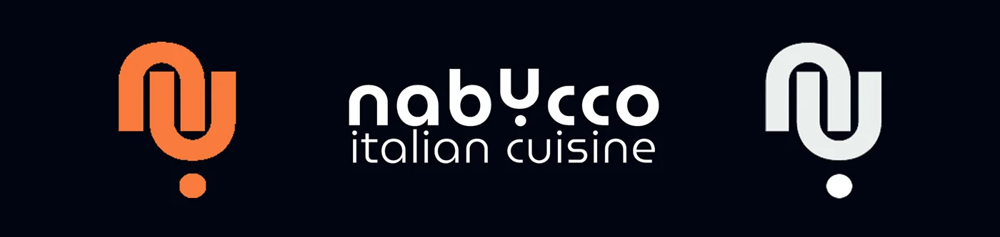
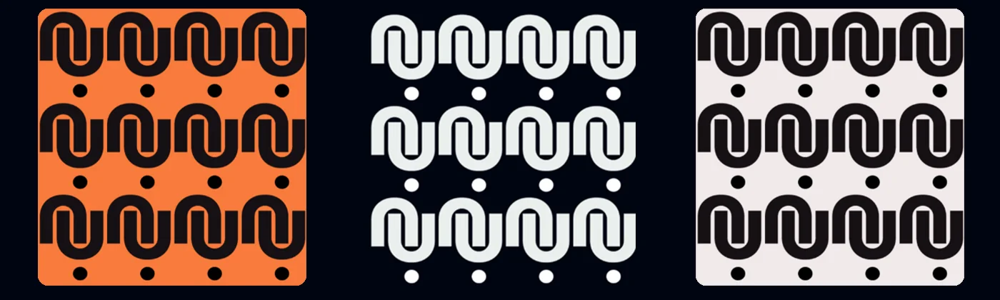
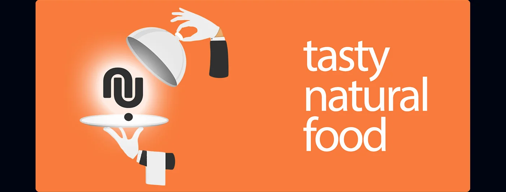
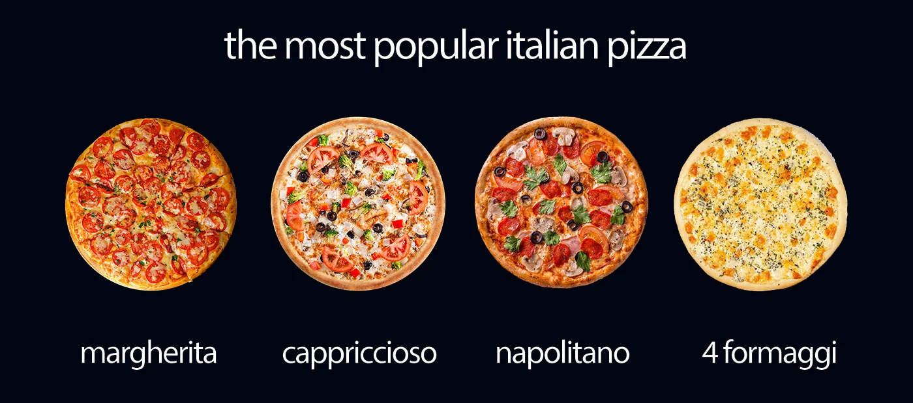
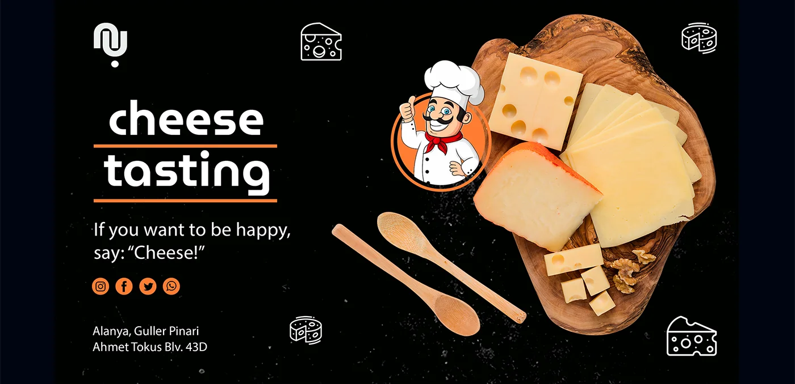
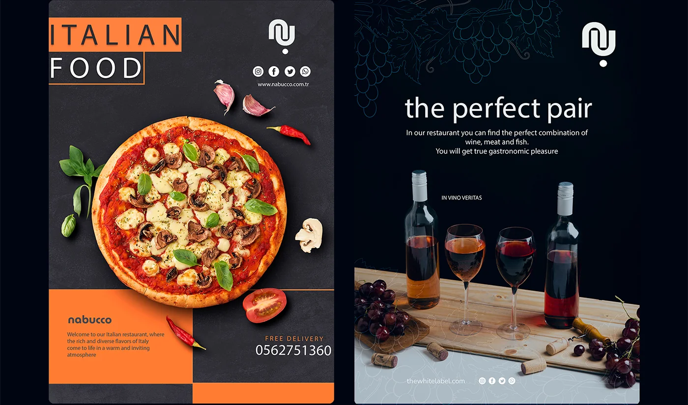
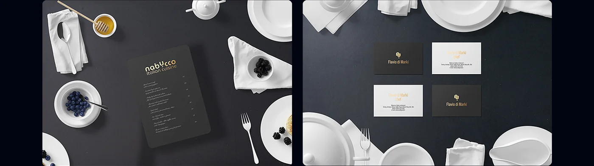
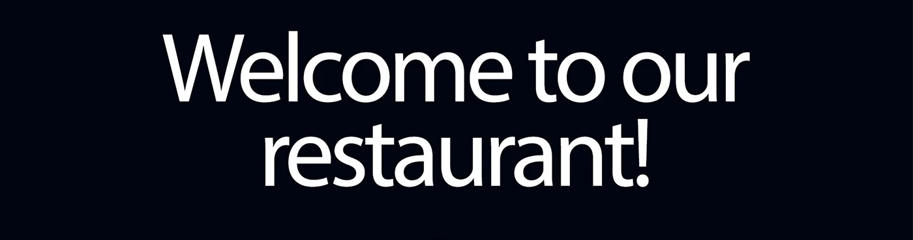

Айдентика
Фирменный стиль для итальянского ресторана в Аланье. Логотип, цветовая система, типографика, носители и SMM-материалы — от нуля до полноценного бренда.
Задача
Итальянский ресторан Nabucco открывался в Аланье с нуля. Владелец — Flavio di Marki — итальянец, который давно мечтал открыть ресторан в Турции. Готовой айдентики не было вообще ничего: ни логотипа, ни цветов, ни понимания визуального образа.
Задача: создать полноценный бренд с нуля. Он должен был транслировать настоящую итальянскую кухню, при этом работать в турецком контексте и не выглядеть как очередная пицца-точка с флагом Италии на вывеске.
«It was my dream — to open my own restaurant in Turkey. Now the dream came true»
Flavio di Marki, владелец Nabucco Italian Cuisine
Исследование
Начал с анализа конкурентов в Аланье — большинство итальянских ресторанов используют предсказуемые решения: красно-зелёная палитра, пицца на логотипе, «итальянская» типографика с засечками. Всё это давно обесценилось.
Изучил современные итальянские бренды в Европе — там тренд на лаконичность, геометрию, оранжево-терракотовые оттенки. Это цвета итальянской архитектуры, солнца, терракоты — настоящей Италии, а не туристического клише.
Анализ конкурентов
Собрал 20+ итальянских ресторанов Аланьи и Европы. Выявил шаблоны, которые нужно избежать, и белые пятна, куда можно зайти.
Референсы и настроение
Собрал мудборд: современная итальянская архитектура, терракота, геометрические паттерны, уличные рынки Неаполя. Утвердил с клиентом.
Именной нейминг
Nabucco — опера Верди, символ итальянской культуры. Имя уже несёт в себе историю и характер. Это и стало концептуальным якорем.
ЦА и контекст
Ресторан в Аланье — аудитория смешанная: туристы, европейцы и местные. Нужно работать на обе группы без потери характера.
Логотип
Логотип строится на монограмме «NU» — первые буквы Nabucco. Форма знака — геометрическая, с характерным изломом, который отсылает к архитектурным элементам итальянских зданий. Знак работает и как самостоятельный символ, и в паре с леттерингом.
Леттеринг «nabYcco» — намеренно нестандартное написание с заглавной Y в середине. Это визуальный трюк, который делает название запоминаемым и создаёт индивидуальность даже в текстовом блоке.

Цветовая палитра
Nabucco Orange
#E8531A
Основной акцент
Espresso
#1A1008
Основной фон
Cream
#F5F0E8
Светлый фон / текст
Типографика
Два шрифта с чёткими ролями: один для заголовков — характерный, с индивидуальностью. Второй для текста — чистый, функциональный. Оба работают в связке на всех носителях.
MuseoModerno
Заголовочный шрифт. Геометрический гротеск с закруглёнными формами — современный, но тёплый. Используется для логотипа, заголовков меню, вывески.
Myriad Pro
Текстовый шрифт. Нейтральный sans-serif с хорошей читаемостью. Используется для описаний блюд, подписей, меток в SMM-материалах.
Паттерн и графика
Ключевой элемент айдентики помимо логотипа — геометрический орнамент на основе монограммы NU. Паттерн строится из повторяющихся знаков и используется на упаковке, носителях, фонах SMM-материалов.
Паттерн работает как узнаваемый элемент системы и позволяет быстро переносить айдентику на разные носители без перегруза макета.

SMM-материалы
Разработал систему шаблонов для Instagram. Каждый пост следует сетке: зона для фото продукта, зона для текста, логотип в фиксированной позиции. Это позволяет клиенту самостоятельно создавать контент без потери фирменного стиля.




Носители
Фирменный стиль применён на всех физических и цифровых носителях ресторана. Единая система работает от визитки до фасадной вывески.

Результат
Полноценная айдентика с нуля: логотип, монограмма, цветовая система, типографика, орнамент, шаблоны для SMM и правила применения на носителях.
Главное — бренд не выглядит как очередной итальянский ресторан в туристическом городе. У него есть характер, система и узнаваемость. Оранжево-тёмная палитра выделяется в ленте и на улице среди конкурентов с предсказуемым красно-зелёным.
Клиент получил не просто логотип, а готовую систему, которую можно масштабировать — на новые локации, новые носители, новые форматы контента.
